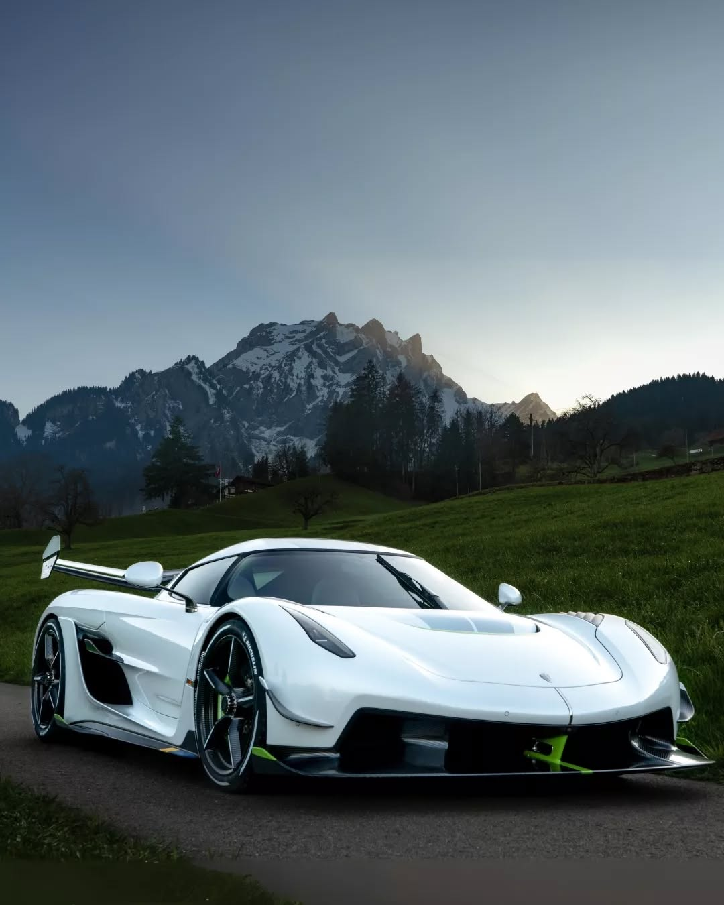

A História do Koenigsegg Jesko
Nomeado em homenagem ao pai do fundador da marca, o Jesko representa a busca incessante da Koenigsegg por inovação e velocidade. Cada unidade é feita à mão na Suécia, incorporando soluções técnicas revolucionárias e exclusividade total. O Jesko é um ícone para colecionadores e entusiastas do automobilismo.
